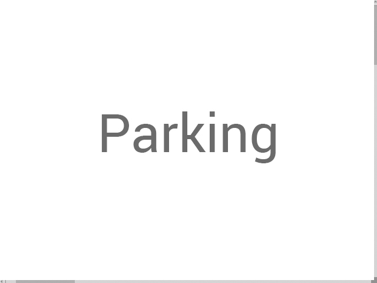
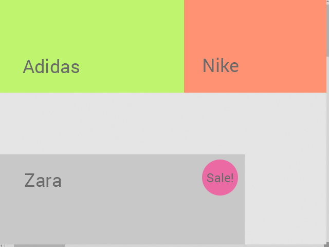
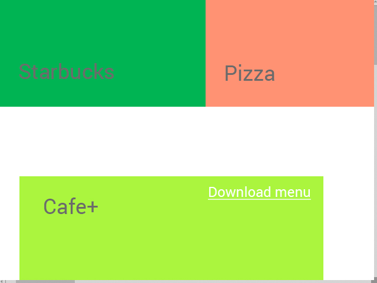

Create. Share. Communicate.
MapAround is a service for creating and sharing local maps.
Decentralised
Create your own local maps. Or add your own places to existing maps
Simple
It's no harder than drawing a plan on a piece of paper. Anyone can do it
Socially integrated
MapAround is not only a tool for navigation, it is also a new way of communication that helps you to organize your offline activities online
More about MapAround
1. Easy map building
This service will provide a tool for creating maps. It is very easy and intuitive, like drawing a map for someone on paper. You can draw only the most important things, and ignore everything that you don't need.

2. Alive
Once created, the map becomes a field for different kinds of communication between the map users. You can change the map, add new objects, create events and invite other users.

3. Scalable
You can draw a plan of your room or of your apartment or house. Or you can make a shared map with your friends. You can even draw a map of a whole university or campus!

4. Collaborative
Many users can edit a single map. When you create a map, you can share it with other users. You just set up permissions and allow others to edit it.

5. Map search
All maps are stored in MapAround's database. You can search a map by its ID, keywords, geographic position, category etc.

Examples
1. Social communication
City Park
2. B2B projects
Shopping mall
floor 0
floor 1
floor 2
Perspectives
1. Navigation
a) Integration GPS navigation (for outdoor projects).
b) Navigation by using camera and Augmented Reality markers.
c) Develop new ways of indoor navigation. For example, one way for to navigate is analyzing WiFi signals.
2. Automatic map creation
A way to map is scanning indoor space with Kinect 3D Scanner.
3. Integration with other services
a) MapAround can use other map services, such as Google Maps. MapAroud lets you make useful additions to classic maps
b) Include information from travel services, such as TripAdvisor. You can place links anywhere in your MapAround map.
4. API
Give other developers the possibility of integrating MapAround service in their applications
Social feedback page
Datailed funding plan (tiers and bonuses)